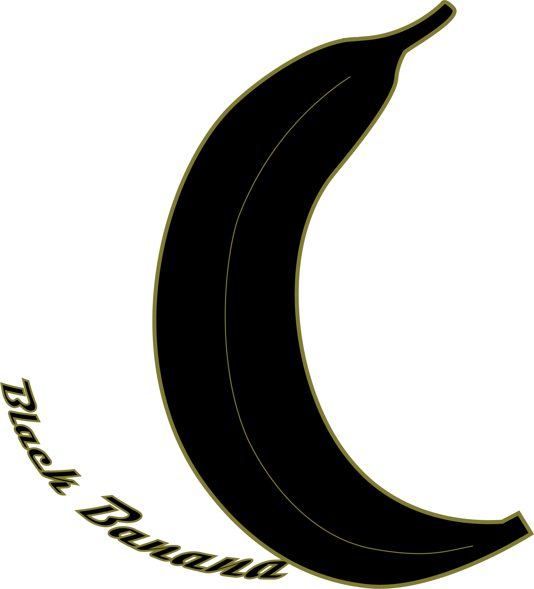
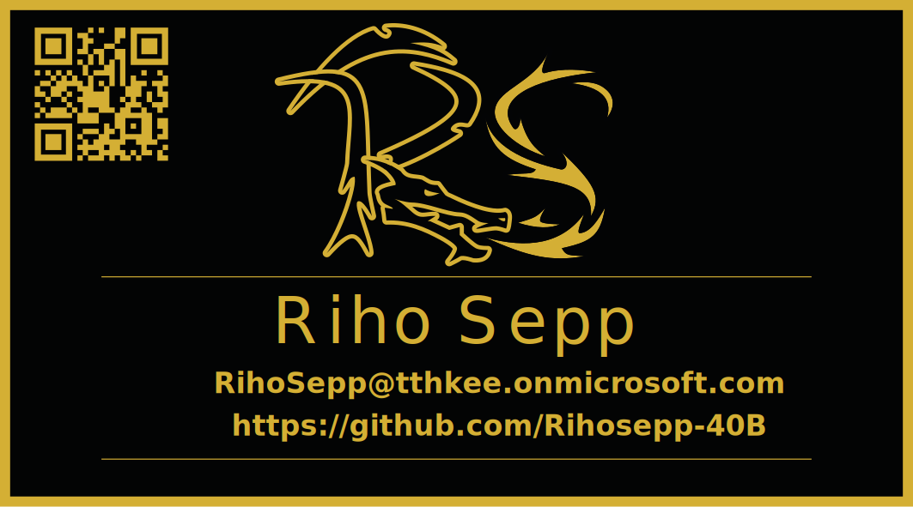
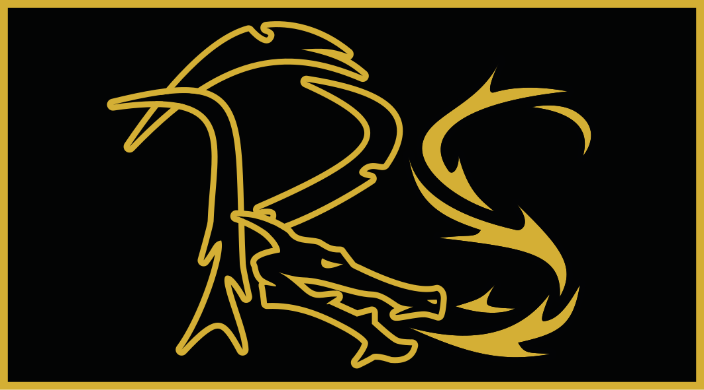
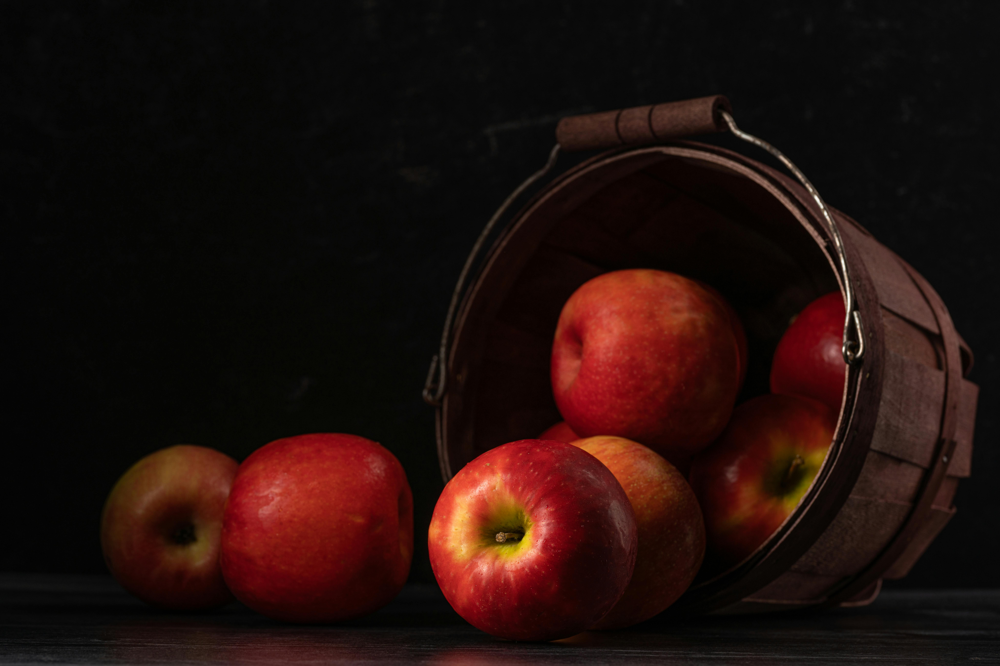

Eesmärk tutvustada Adobe Illustrator programmi. Mõningate ülesannete raames sai kodusel tegevusel kasutatud ka alternatiivset programmi Affinity.
Ülesanne: Kasutades kujundeid, pen ja curvature ning shape builderi tööriistu, kujundage oma individuaalne logo. Logos võib kasutada näiteks:
Tehtud logod:
|  |
Ülesanne: Kasutades kujundeid ja oma eelnevalt tehtud logo, kavanda visiitkaart.
Uue faili loomisel illustratoris, sea suuruseks 9x5cm ja kasuta kahte artboardi ning kõike eelnevat.
Infokülg peaks sisaldama:
Tehtud visiitkaart:
|  |  |
Ülesanne: Otsi pilt, millel on mitu keskmise suurusega objekti, ning kasutades Pen tööriista, joonista oma valitud objekt üle kolmnurksete polügonidega.
| Originaal | Uus |
|---|---|
|  | |